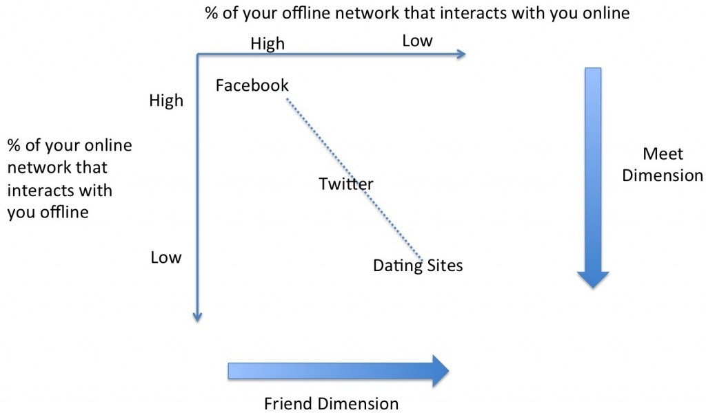

Twitter (CSN, Tuesday, Week 9)
competing-with-social-networksyear-twoThe main competitor for meet platforms? Reality --- it's pretty good.
Twitter: started as a friend platform, now mostly a meet platform.
Meet vs. friend platforms:

May be a false dichotomy because most meet platforms use "friend features," too.
{kind=link}
Twitter's Breadth:
500M users now! How?
-- SxSW launch => Misconception. Look at user count; basically doesn't change...
-- Celebrities => Yes, but mass adoption did not happen when first celebs hopped on.
-- WoM => Not really.
-- Media! => Twitter provides natural complement for old media: timely reaction to events; new source of news; instant dialogue. Big bumps from Rick Sanchez Live, Mumbai bombing, and Beijing Olympics.
Twitter unintentionally created a platform that was a natural complement to network news.
Lesson: Borrow someone else's traffic. Create a platform that serves as a natural complement a pre-existing, high-traffic platform.
Twitter's Search:
Terrible. Hard to find people, no guidance, no response to most tweets, hard/not natural to post recycled content (compare to Pinterest or Foursquare).
Hashtags are rarely used (3% of tweets).
"You are more likely to get a message as a man on OkayCupid than to get a follower on Twitter."
Interaction:
Really hard/unintuitive.
How to monetize? Ummm....
Ads: targeted discounts/tweets? No one hears you, and users have no purchase intent.
Data: sell analytics? We don't know who Twitter users actually are; minimal demographic information and sentiment analysis via Twitter is notoriously unreliable.
Other options are no good either...